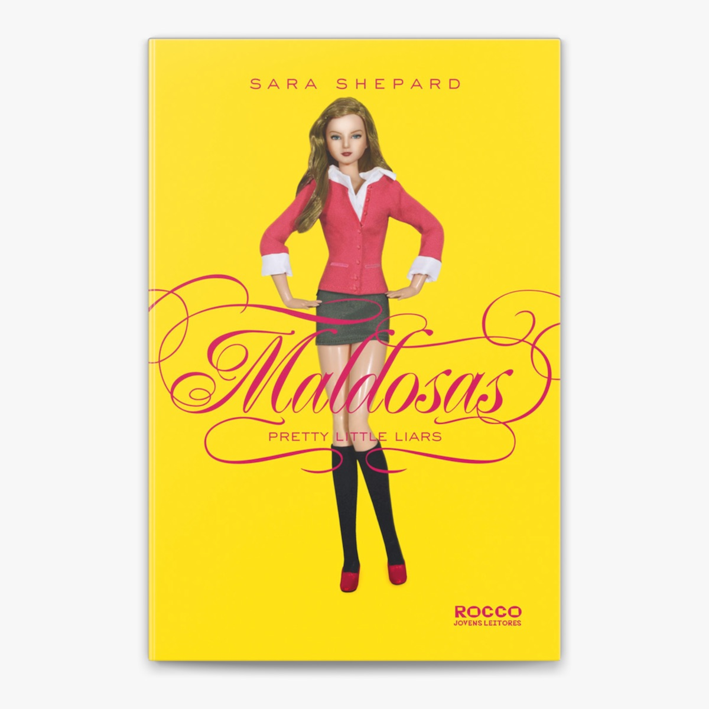

Carolina Vieira
@caroliss
Sobre Mim:
"(...)Somos como madressilva quando se enrola à volta do ramo da aveleira: uma vez a ela ligada e presa, ambas podem durar juntas eternamente, mas, se as querem separar, a madessilva morre em pouco tempo e o mesmo sucede à aveleira. Tal é o nosso caso: nem vós sem mim, nem eu sem vós!"
Trecho do livro Tristão e IsoldaLista de Leituras
12 Livros
12 Livros
American Idiot marcou a retomada da carreira do Green Day após um período de declínio
na sua popularidade. Registrou entrada nas paradas de 27 países, chegando ao topo em dezenove deles, e
acabou por vender dezesseis milhões de cópias mundialmente.

”Os Sete Maridos de Evelyn Hugo” é uma obra que nos direciona aos bastidores da old
Hollywood, onde atrizes e atores de cinema atingiam um status de superstar ao cravar o nome na história do
cinema mais badalado do mundo. É nesse cenário em que ocorre a apresentação de Evelyn Hugo, descrita como
uma espécie de força da natureza capaz de atrair desejo, inveja, admiração e ódio.

"Delilah Green não está nem aí", de Ashley Herring Blake, conta a história de Delilah
Green, uma fotógrafa em ascensão que se vê obrigada a voltar à sua cidade natal, Bright Falls, para
fotografar o casamento de sua irmã postiça, Astrid. Ao reencontrar Claire Sutherland, uma antiga amiga de
infância de Astrid, Delilah se vê envolvida em um conflito entre o desejo de esquecer o passado e a
possibilidade de um novo amor.

A trajetória de Liesel Meminger é contada por uma narradora mórbida, surpreendentemente
simpática. Ao perceber que a pequena ladra de livros lhe escapa, a Morte afeiçoa-se à menina e rastreia suas
pegadas de 1939 a 1943. Traços de uma sobrevivente: a mãe comunista, perseguida pelo nazismo, envia Liesel e
o irmão para o subúrbio pobre de uma cidade alemã, onde um casal se dispõe a adotá-los por dinheiro.
De posse de um macabro objeto que Sienna encontrou no paletó de Langdon, os dois têm
que seguir uma série inquietante de códigos criada por uma mente brilhante, obcecada tanto pelo fim do mundo
quanto por uma das maiores obras-primas literárias de todos os tempos: A Divina Comédia, de Dante Alighieri.
Melancia é um romance sobre sobrevivência e a arte de manter o bom humor mesmo diante
das circunstâncias mais adversas Com 29 anos, uma filha recém-nascida e um marido que acabou de confessar um
caso com a vizinha, Claire Walsh se resume a um coração partido e um corpo inteiramente redondo, aparentando
uma melancia.

"Um editor de Nova York pediu que eu escrevesse o que sei sobre os deuses gregos, e
fiquei pensando: “Pode ser anonimamente? Porque não estou a fim de despertar a ira dos olimpianos de novo.”
Mas, se assim eu estiver ajudando vocês a conhecer os deuses gregos e a sobreviver caso algum dia eles
apareçam na sua frente, então acho que escrever isso tudo vai ser minha boa ação da semana."

Todo mundo tem um segredo que, se revelado, pode mudar a vida por completo. As
adolescentes Spencer, Aria, Emily e Hanna sempre souberam disso, mesmo antes da melhor amiga delas, Alison,
desaparecer misteriosamente. Há detalhes seus que só foram contados a Alison, e elas têm muito medo de que
alguém mais os descubra.

"O Diário de Anne Frank" narra a história da jovem judia Anne Frank e sua família, que
se escondem de perseguição nazista em um anexo secreto de uma fábrica em Amsterdão durante a Segunda Guerra
Mundial. Anne registra em seu diário suas experiências, sentimentos e pensamentos sobre a guerra, a
perseguição e a vida em confinamento.

Em "Amanhecer", o último livro da saga Crepúsculo, Bella e Edward casam-se e partem
para lua de mel, onde Bella decide tornar-se imortal para ficar com Edward. Esta decisão traz consequências,
como uma gravidez perigosa e a transformação de Bella em vampira. A história segue os desafios de Bella como
vampira, a criação de sua filha Renesmee, e a ameaça que a família Cullen enfrenta devido à sua existência,
levando a um conflito épico com os Volturi e outros clãs vampiros.

Em meio a uma viagem, Hercule Poirot é surpreendido por um telegrama solicitando seu
retorno a Londres. Logo o famoso detetive belga embarca no Expresso do Oriente, que está inesperadamente
cheio para aquela época do ano. Pouco após a meia-noite, o excesso de neve nos trilhos obriga o trem a
parar, e na manhã seguinte, o corpo de um dos passageiros é encontrado, golpeado por múltiplas facadas.
Isolados e com um assassino entre eles, a única solução de Poirot é iniciar uma investigação, reunindo todas
as pistas e os suspeitos para chegar à conclusão de quem é o criminoso ― antes que ele faça mais uma vítima.

"O Diário de Bridget Jones", de Helen Fielding, é um romance que narra um ano na vida
de Bridget, uma mulher solteira de trinta e poucos anos, moradora de Londres. O livro é escrito na forma de
um diário, onde Bridget registra seus pensamentos, lutas e experiências em relação à sua vida amorosa,
carreira, peso, vícios e amizades.
"O Diário de Bridget Jones", de Helen Fielding, é um romance que narra um ano na vida
de Bridget, uma mulher solteira de trinta e poucos anos, moradora de Londres. O livro é escrito na forma de
um diário, onde Bridget registra seus pensamentos, lutas e experiências em relação à sua vida amorosa,
carreira, peso, vícios e amizades.
"O Diário de Bridget Jones", de Helen Fielding, é um romance que narra um ano na vida
de Bridget, uma mulher solteira de trinta e poucos anos, moradora de Londres. O livro é escrito na forma de
um diário, onde Bridget registra seus pensamentos, lutas e experiências em relação à sua vida amorosa,
carreira, peso, vícios e amizades.
"O Diário de Bridget Jones", de Helen Fielding, é um romance que narra um ano na vida
de Bridget, uma mulher solteira de trinta e poucos anos, moradora de Londres. O livro é escrito na forma de
um diário, onde Bridget registra seus pensamentos, lutas e experiências em relação à sua vida amorosa,
carreira, peso, vícios e amizades.